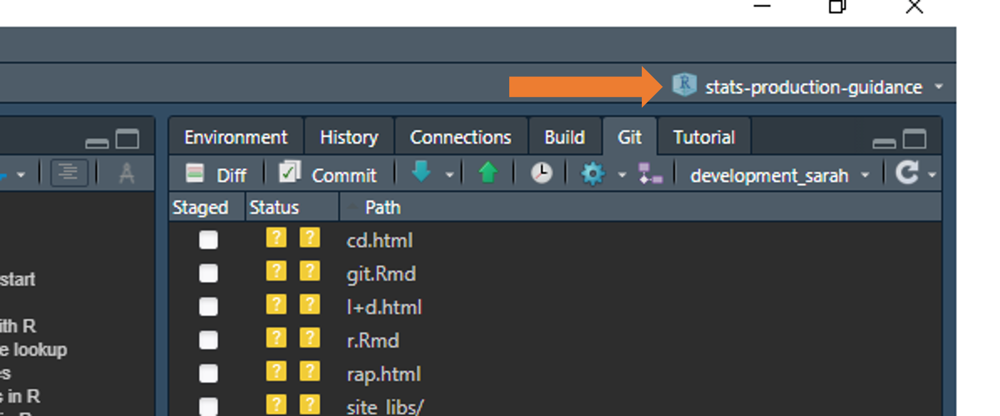

Guidance and tips for using the programming language R
R is an open-source programming language specifically aimed at statisticians and data analysts.
R can be used for almost anything you can think of, notably data analysis, data visualisation, and creating reports and dashboards. It can also be used to extract data from SQL databases and run SQL queries.
Download R (language) and RStudio (IDE) from the DfE software center. We also recommend that you download RTools (a helpful R extension) at the same time.
There are usually a couple of different versions available for software on the software center, we’d recommend you always go for the latest (newest) version possible.
The DfE Analytics Academy host an online R training course. This is a great resource full of reproducible examples using DfE data. The course takes you through initially getting R downloaded, all the way through to developing apps in RShiny.
There is also the DfE R training guide, which is a great starting point and reference to guide you through how to get started using R and RStudio.
As an alternative, with a number of options for beginners to R, RStudio Education provide a variety of materials to suit different learning styles.
Tips for reaching best practice in R can be found on our RAP page, with guidance on meeting best practice in RAP for clean final code. This makes it easier to read and pick up if another person is running your code.
Whenever you are using R, you should work in an RProject. This just makes sure you are set up in the correct working directory, so your code is pointing at the right folders and files.
This guide for using projects in R is a really useful article to help you set up a project.
You can check which project you are working in by looking in the top right hand corner of RStudio:

In RStudio you can greatly increase the navigability of your code by
taking advantage of outlines. More information on folding
and navigating outlines in RStudio can be found online, though when
using rmarkdown reports, remember to use names first, such as
## Rows that aren't matching: r nrow(joined %>% filter(matching == FALSE)),
rather than having the R code first, so that they are easy to discern in
the outline.
You should use the renv package for package and version control in R.
Packages and versions of R regularly update. Over time, this can cause code to break - e.g. if different dependencies are required for later versions of packages to work. Using renv creates a “snapshot” of your code and packages at the time you created it, which anyone can then recreate when they come to use your code.
This is really important for reproducibility, and will help you meet elements of great practice with recyclable code for future use.
Sometimes renv::restore() can fail, and when in specific renv-controlled projects install.packages() will fail saying that packages aren’t available even when they clearly are. There are a couple of workarounds we have found that get around this failure.
Sys.setenv(no_proxy="*")
myPath <- .libPaths()[1]
forceInstall <- function(pkg, path) {
missing <- suppressWarnings(eval(parse(text= paste0("!require(",pkg,")"))))
if(missing == FALSE){
message(pkg, " is already installed.")
} else{
install.packages(pkg, lib = path)
}
}
forceInstall("jsonlite", myPath)
renvPackages <- names(jsonlite::fromJSON("renv.lock", flatten = TRUE)$Packages)
invisible(lapply(renvPackages, forceInstall, path = myPath))More manual equivalent to use for specific packages:
.libPaths() # note down output 1, and reuse in the lib argument of install.packages() as below
install.packages("rmarkdown", lib = "C:/Users/swong/OneDrive - Department for Education/Documents/stats-production-guidance/renv/library/R-4.0/x86_64-w64-mingw32")
To update a single package run:
renv::update("dplyr")
To update all packages run:
renv::update()
This is surprisingly neat to do. Let’s say you wanted to roll back to version 1.0.2 of dplyr, you would run the following:
renv::install("dplyr@1.0.2")
Here is another free introduction to R course by Quantargo.
R Markdown: The Definitive Guide, hopefully this one should be relatively self-explanatory!
Data science in education provides a heavily detailed guide for beginners in R learning to process data, with some well written out sections that may be of interest.
Handy guide to collapsing and sectioning R code for easy navigation in RStudio.
Here are 5 handy tidyverse functions that you should know if you’re using R to process data. Number two is especially useful for those processing wide data into a tidy format!
MoJ have produced guidance on writing functions in R
If you’re wondering how best to make the jump to R from Excel and SQL, take a look at this coffee and coding presention by David Sands.
Malcolm Barrett has done some slides on dplyr, ggplot2, and using purrr which may be useful if you’re looking at learning more about any of those packages.
Also check out the janitor package, it has some particularly powerful functions that are worth a look for tidying and QA’ing data.
R can do everything you do in excel, but takes out the human error. The reference table below shows how you would carry out popular Excel commands in R.
R comes in with a built-in dataset called “iris”. We’ll use this for all examples so you can recreate them in your local area.
REMEMBER: R is case sensitive, so all references to column names/entries need to be as-is in the dataset you are looking at. Functions exist that can translate all your columns to lower or snake case for ease!
| Common Excel Task | Example with iris | How to do in R with dplyr |
|---|---|---|
| Select specific columns | Select only species and petal length | iris %>% select(Species, Petal.Length) |
| List unique entries in field (column) | Find the unique entries for the “Species” column in iris | iris %>% select(Species) %>% distinct() |
| Filter/select based on criteria | Filter for sepal length >4 and sepal width <2.5, but NOT “versicolor” species | iris %>% filter(Sepal.Length > 4 & Sepal.Width <2.5 & Species != "versicolor") |
| Filter for multiple criteria in same column | Filter for all “setosa” and “versicolor” species | iris %>% filter(Species %in% c("setosa", "versicolor") |
| If else with OR | Create new column called “size_group” based on length or width of petal | iris %>% mutate(size_group =if_else( Petal.Length > 4 | Petal.Width >1.5, "Large", "Small")) |
| Multiple if else | Create new column called “flower_price” based on species and petal length | iris %>% mutate(flower_price = case_when( Species == "setosa" & Petal.Length > 1.5 ~"top band",Species == "versicolor" & Petal.Length < 4 ~"low_band",TRUE ~ "mid_band")) |
| COUNTIF | Count the number of species if they have a petal length >1.5 | iris %>% filter(Petal.Length > 1.5 ) %>%group_by(Species) %>% count() |
| SUMIF | Sum petal width of species if sepal width <3 | iris %>% filter(Sepal.Width <3) %>%group_by(Species) %>%summarise(Petal.Width = sum(Petal.Width)) |
| VLOOKUP | Lookup to a table called “lookup” | iris %>% left_join(lookup, by.x="Species", by.y ="plant_species") |
| Order by | Order dataset by descending petal width | iris %>% arrange(desc(Petal.Width)) |
More tips for moving from using Excel to using R can be found in the excel-to-R wiki.
R can do a lot of the things that are possible in SQL. The reference table below shows how you would carry out some popular SQL commands in R.
REMEMBER: R is case sensitive, so all references to column names/entries need to be as-is in the dataset you are looking at. Functions exist that can translate all your columns to lower or snake case for ease!
| Common SQL Task | How to do in R (with dplyr) |
|---|---|
| SELECT * FROM TABLE | table %>% select() |
| SELECT ColA, ColB, ColC FROM TABLE | table %>% select(ColA, ColB, ColC) |
| SELECT DISTINCT ColA FROM TABLE | table %>% select(ColA) %>% distinct() |
| TABLE A LEFT JOIN (TABLE B) ON TABLEA.x = TABLEB.y | tableA %>% left_join(TableB, by = c(x = y)) |
| CASE WHEN x = 1 THEN 1, WHEN x =2 THEN 2, ELSE 0 END AS New_column_name | %>% mutate (New_column_name = case_when (x == 1 ~ 1, x == 2 ~ 2, TRUE ~ 0)) |
| CONCAT(LEA, ESTAB) AS LAESTAB | %>% mutate(LAESTAB = paste0(LEA, ESTAB)) |
| SELECT COUNT(*) FROM TABLE | table %>% nrow() |
| SELECT COUNT(ColA) FROM TABLE | table %>% count(colA) |
| SELECT Date_column = CONVERT(DATE, Date_column) FROM TABLE | table %>% mutate(Date_column = as.Date(Date_column)) |
| SELECT Number_column = CONVERT(INT, Number_column ) FROM TABLE | table %>% mutate(Number_column = as.numeric(Number_column)) |
| SELECT String_column = CONVERT(VARCHAR, String_column ) FROM TABLE | table %>% mutate(String_column = as.character(String_column)) |
| DROP TableA | rm(TableA) |
More tips for moving from using SQL to using R can be found in the SQL-to-R wiki.
A selection of handy bits of code and workarounds for common issues. More useful code snippets can also be found in our github repo
This can be done most easily by navigating in RStudio through
Tools > Global options > General > Basic > R version (change).
It’s likely you’ll need to restart RStudio for the changes to take
affect.
The base R function of round() rounds 5’s downwards. To round them upwards you can create a custom function like the one below:
roundFiveUp <- function(x, n){
z = abs(x)*10^n
z = z + 0.5 + sqrt(.Machine$double.eps)
z = trunc(z)
z = z/10^n
positiveNegative = sign(x)
return(z * positiveNegative)
}This can be worked around by using a combination of
eval() and parse(), as shown in the below
function:
showFilterLevels <- function(data, meta) {
filters <- meta %>%
filter(col_type == "Filter") %>%
pull(col_name)
levelsTable <- function(filter) {
return(eval(parse(text = paste0("data %>% select(", filter, ") %>% distinct()"))))
}
output <- lapply(filters, levelsTable)
return(output)
}You might want to filter your dataset based on multiple negative
conditions. Normally to filter on multiple conditions, you would use
filter(condition1 & condition2). The “filter” function
does not work well with negative conditions (i.e. filtering for cases
where condition 1 and condition 2 are not met). Instead, you can use
subset(!(condition1 & condition2).
Struggling to get files to talk to one another, or get code to find
and use another R script? Use here::here() and marvel at
it’s wondrous ability to magic away issues.
There’s an easy way to interweave multiple vectors into one single
vector using c(rbind()). The example below shows two
vectors, but you can have even more if you need.
#Two vectors, x and y
x <- 1:3
y <- 4:6
#Run code to interweave
c(rbind(x, y))
#Output below
# [1] 1 4 2 5 3 6When pulling ggplot charts into RMarkdown reports, you can consider making them even more user-friendly and interactive with plotly. Further information on how to make your charts interactive with plotly can be found online.
#Simple ggplot chart called "p"
p <- ggplot(dat, aes(x=xvar, y=yvar)) +
geom_point(shape=1) # Use hollow circles
#Apply ggplotly() to it to make it interactive
fig <- ggplotly(p)
Have you ever needed to replace every value in your data with another? This can come in handy when you are looking at suppression, e.g. converting all NAs to “z” or all values under a certain threshold to “c”.
data %>% mutate_all(~ replace(., . == "Value to replace", "Replacement"))
The group_by() function in dplyr is really useful, but can be fiddly if you only want to use it for one operation in a chunk of code. The with_groups() function from dplyr lets you do this, saving you having to group and ungroup data each time.
data %>% mutate(annual_average = with_groups(time_period, mean))
Often we’ll take chunks of code and reuse them for new projects. This can lead to building up a long list of packages to install, not all of which end up being used in your new code. The NCmisc package is a really handy way to check which packages and functions are used in your code.
Firstly, load up all the packages the code has library()
commands for, then run the following:
list.functions.in.file('your-filename-here.R', alphabetic = TRUE)The depgraph package allows you to plot a graph of all the dependencies in your R project, which can be a useful tool to help you cut down on the number of package dependencies. Briefly, in these graphs you can look for “hot spots” in the network (big bright dots), which represent packages that have many upstream dependencies but are potentially easy to remove because they have few downstream dependencies (that is, only your package depends on them).
plot_dependency_graph(
pkg = multibridge_pkg
, suggests = FALSE
, option = "cividis"
)
The set.seed() function generates a sequence of random numbers, starting from the value you define in the brackets. This ensures you get the same sequence of random numbers each time you run set.seed() with the same value, which is helpful to test that your results are reproducible.
# random sampling
> sample(LETTERS, 5)
[1] "K" "N" "R" "Z" "G"
> sample(LETTERS, 5)
[1] "L" "P" "J" "E" "D"
# reproducible random sampling
> set.seed(42); sample(LETTERS, 5)
[1] "Q" "E" "A" "J" "D"
> set.seed(42); sample(LETTERS, 5)
[1] "Q" "E" "A" "J" "D"
The tidylog package is a really useful tool for providing automated feedback on dplyr and tidyr operations.
library(tidylog)
filtered <- filter(mtcars, cyl == 4)
#> filter: removed 21 rows (66%), 11 rows remaining
mutated <- mutate(mtcars, new_var = wt ** 2)
#> mutate: new variable 'new_var' (double) with 29 unique values and 0% NAR can be used to execute SQL scripts to extract data from a database as well as querying the database directly via R. For using R to execute a SQL script you’ll need the SQL script/s to be in your R Project and to make a connection via R to the database.
# Library calls ====
library(odbc)
library(DBI)
# DB connection ====
con <- DBI::dbConnect(odbc::odbc(),
Driver = "ODBC Driver 17 for SQL Server",
Server = "server_name",
Database = "database_name",
UID = "",
PWD = "",
Trusted_Connection = "Yes"
)
# Function to read in sql scripts ====
getSQL <- function(filepath){
con = file(filepath, "r")
sql.string <- ""
while (TRUE){
line <- readLines(con, n = 1)
if ( length(line) == 0 ){
break
}
line <- gsub("\\t", " ", line)
if(grepl("--",line) == TRUE){
line <- paste(sub("--","/*",line),"*/")
}
sql.string <- paste(sql.string, line)
}
close(con)
return(sql.string)
}
# Execute SQL query and pull into R ====
my_table <- dbGetQuery(con, getSQL("my_query_script.sql"))
If you’re struggling to get your SQL scripts to execute from R, try adding the following two lines to the top of your SQL script to force the formatting required for it to work:
SET ANSI_PADDING OFF
SET NOCOUNT ON;